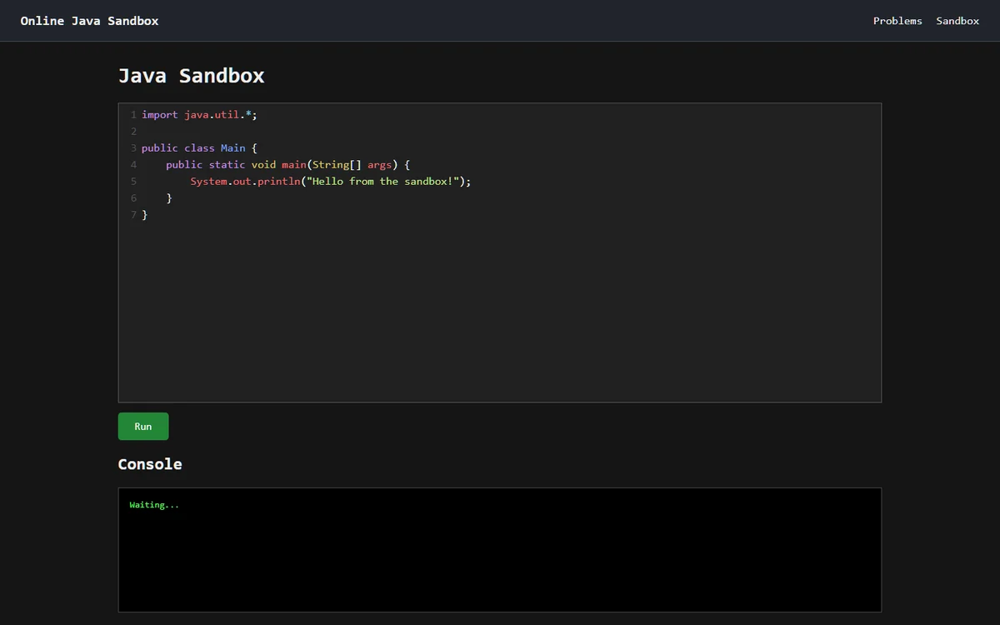

Online Java Sandbox
What actually happens between clicking “Run” and seeing Java code execute on a server? I built this sandbox to find out. It’s an evolving prototype: a browser editor, a Java backend and disposable Docker containers, running on my Raspberry Pi.
A look under the hood
- Java and Spring Boot backend
- GitHub OAuth 2.0 authentication
- PostgreSQL persistence
- isolated Docker execution
- automated tests and GitHub Actions
- Checkstyle and SonarQube Cloud quality checks
- self-hosting on a Raspberry Pi
Making room for other people
Building it alone was one kind of challenge. Making it understandable to someone else was another. I documented the architecture and added a simpler development mode so contributors could get started without recreating my home server.
